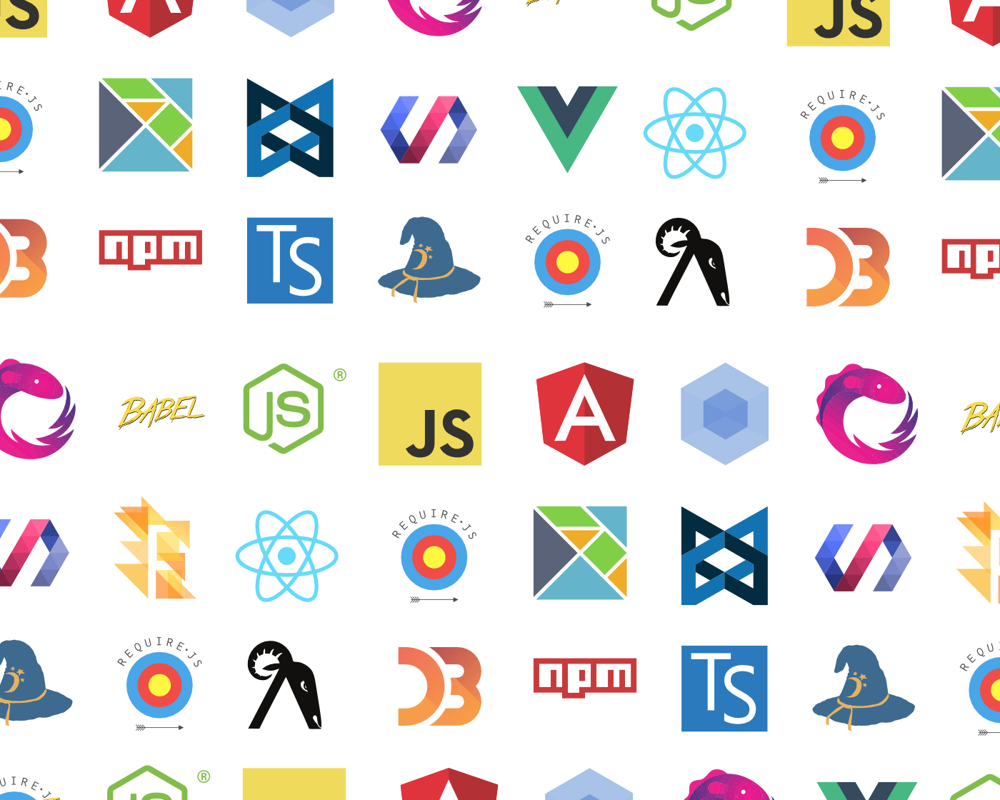
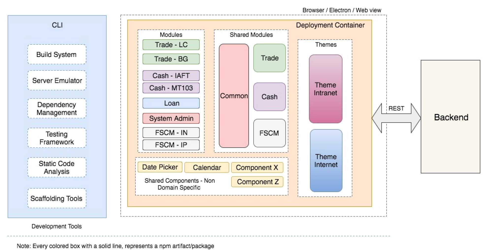
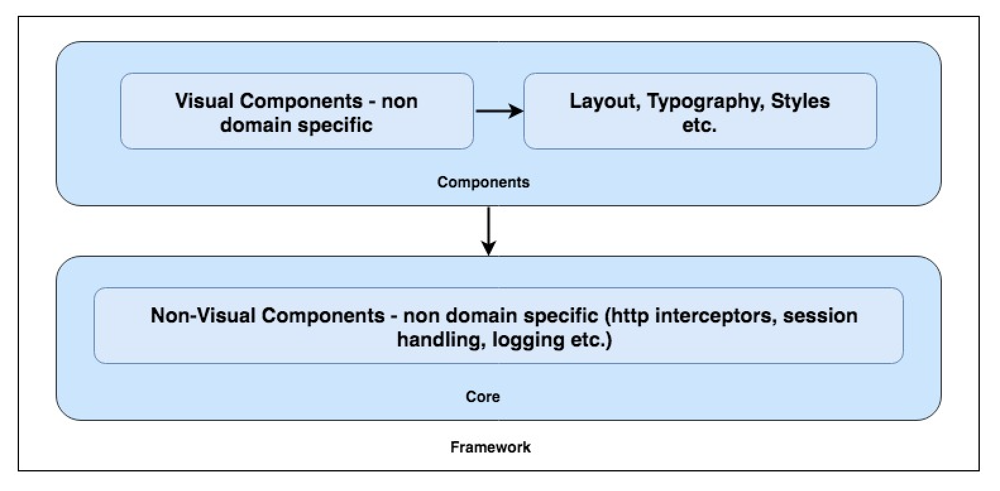
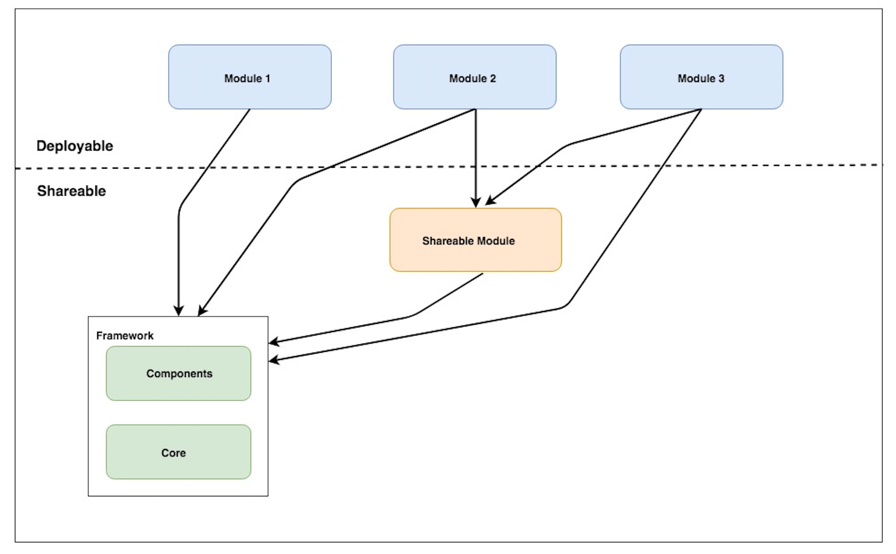
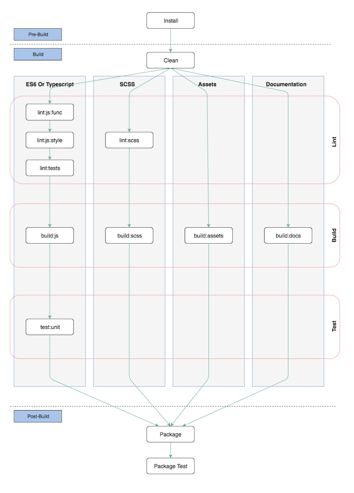
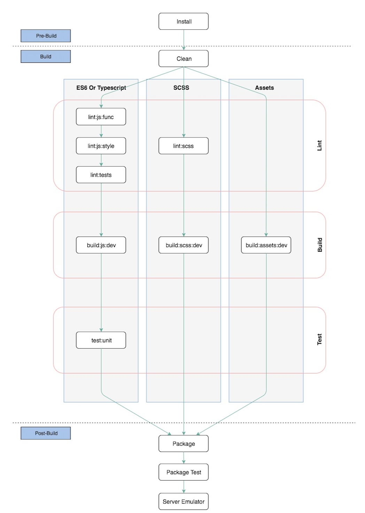
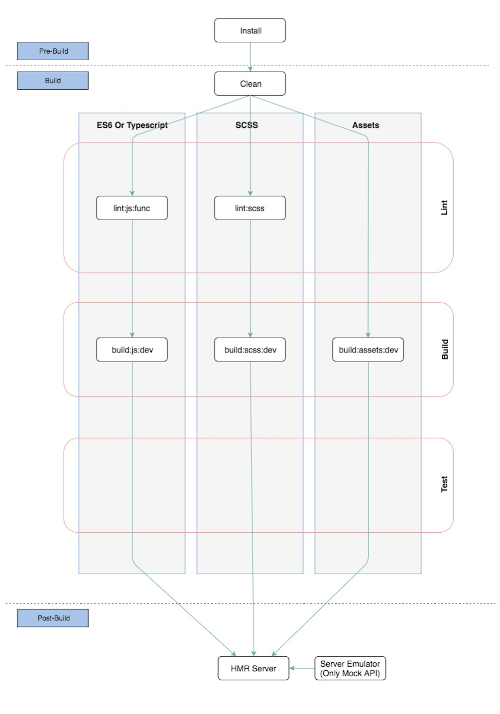
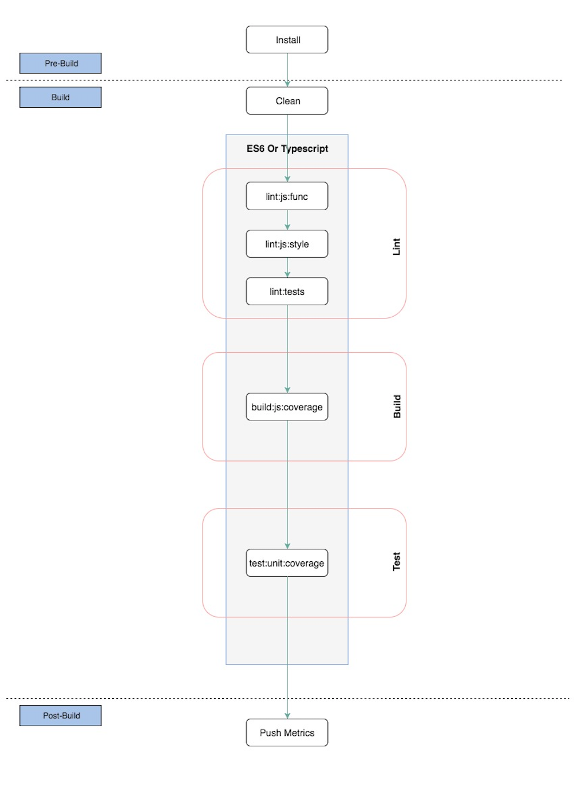
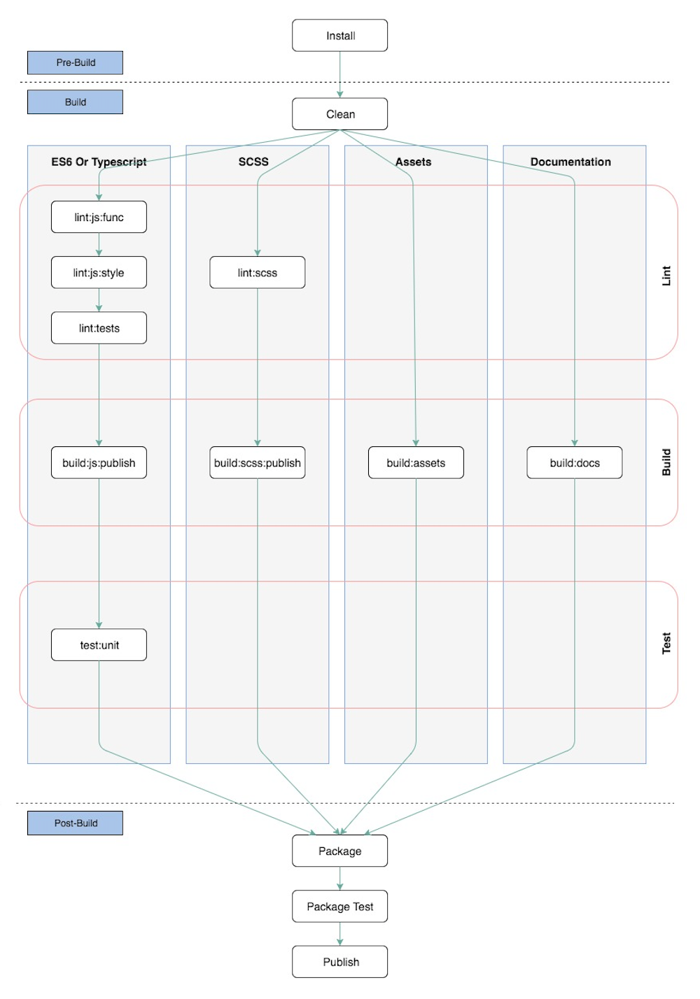
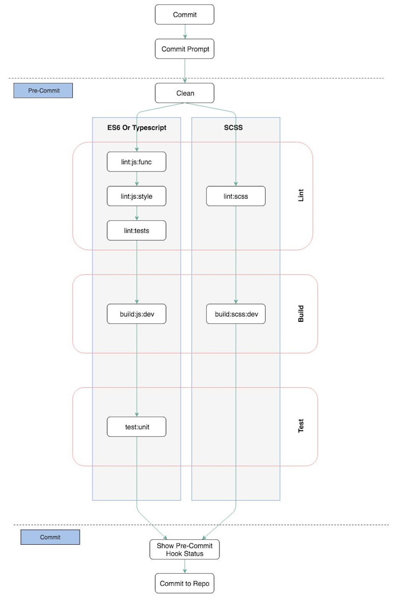

UNIVERSAL FRONTEND ARCHITECTURE
Universal Frontend Architecture is a Generic Modularized Cross-framework UI Architecture for building effective, robust and maintainable Digital Products, Component Libraries and UI SDKs across a Product Oriented Company.
Vision
- Define and build an universal architecture that is framework agnostic but remains opinionated to allow semi constrained UI development across a company.
- Allow a core UI team to manage the coding conventions, artifact repository, build pipelines etc. across all the products of a company.
- Build, share and manage Component Libraries conforming to a Company Style/Branding Guide.
- Build SDK’s to help with faster development with meta-data driven screens.
Challenge - The Current UI Landscape

Framework
The Architecture will be composed of Horizontal Framework and Vertical Framework.
Horizontal framework
Choices for Horizontal Framework varies from one company to another (Angular, ReactJS, VueJS etc.) . But the common aspects that we need to look for in any library/framework are below:
- Open Source
- Nice and clean architecture
- Modular
- Consistent
- Component based approach
- Testable
- Provides a lot of tools out of the box
- Designed for large scale development
- Performance
- Security
Language
Language selection should be based on, which language the developers are more confortable to code! Below are our choices for the three most popular frontend libraries.
- ES6 or ES7 - ReactJS, VueJS
- Typescript - Angular, ReactJS, VueJS
- ES6 or ES7 (with FLOW typechecker) - ReactJS
Vertical Framework
Vertical Framework is what we will define to make sure any horizontal framework can fit into it seamlessly.
Deployment Container
What are Deployment Containers?
Deployment Containers are used to compose multiple modules to create Products. Deployment Containers have a single responsibility. That is to import all the required modules to build a product and to call the CLI to help in all the tasks from bundling to testing. Deployment Containers don’t have any code that contributes to a functionality or user interface. In other words they are aggregators and not creators.
How many Deployment Containers can a Product have?
Every Product has at least one DC. But when you want to separate the code for a true microservices deployment where even the UI code is broken down into multiple parts and deployed along with the backend microservice, we can consider to have multiple DC’s.
Components
The Components should contain all the non domain specific visual components and helpers, that can be used to create other components and business features.
What is a component?
A component is a discrete bit of the UI that owns one specific
responsibility and does it well.
There are 2 types of components: non domain specific and
domain specific.
What is a non domain specific component?
Non domain specific components are baseline UI elements that on their own don’t provide context, but are moldable for different solutions. Modals, tooltips, inputs and toasts are all good examples of non domain specific components.
Modules and Shared Modules

What is a Module?
Module by itself is a final product, a bounded context (http://martinfowler.com/bliki/BoundedContext.html). A Module cannot be extended, augmented or changed, but another Module can be created that provides the desired augmented services or extensions. A Module is always domain specific and a deployable unit. A user workflow typically involves N Modules. The Framework allows seamless navigation across Modules.
What is a Shared Module?
A Module is deployable and not shareable by default. If you need to share something from a Module, you should create a Shared Module, which is shareable and not deployable and also a bounded context (and a separate package). You can use the Shared Module as a (3rd party) dependency in an other Module.
Theme Module
Themes define the look and feel. An application can be configured to have mulitple themes and switching between themes can be done at run time (dynamically).
- Themes are also considered as separate npm packages so that a Deployment Container can compose a Product based on multiple themes with user specific theme selection.
- Themes should provide default styles, colors, layouts for all the components, modules and shared modules to use and extend.
- Themes should also have capability to override the component/module specific styles to allow fine grained control to Product teams.
- Themes should be dynamic and can be changed on the fly without browser refresh.
- Handling multiple themes is a requirement in some companies where they want to show a common theme for login for all the products but post-login they want product specific themes.
Component Library
Major initial effort is usually concentrated on building the components, this is where companies go wrong. Instead, more effort should be placed on designing/architecting the way to build, share and maintain the components in the initial stages of a library. Later it becomes very easy to build components on pre-defined architecture and share the components in a automatic way. In other words, we need to strive to attain Continuous Release/Delivery, so that all the consumers of these components are notified about new releases and they can upgrade based on the product strategy.
Below are some points to consider when building component libraries:
- CLI to scaffold components.
- Version control each component (Follow a versioning protocol like Semantic Versioning 2.0)
- CLI to auto build every component into a shareable artifact, test it and auto publish it to the Artifact Repository.
- Sourcemaps need to be attached along with the artifact if we are obfuscating and uglifying the source.
- Generate API documents and publish the same with the Component artifact (JSDoc, TSDoc, SCSSDoc etc.) so that the consumer gets immediate document to refer to.
- Generate Release notes for every Component providing the list of bug fixes, features, breaking changes etc., so this will help the consumer to decide on the strategy to upgrade.
- Component Showcase/Demo for demonstrating all releases of components. This will prove that the component seamlessly fits along with other components (Eg. React StoryBook, Styleguidst)
CLI (Dev Tools)
CLI is used to do all the heavy lifting tasks and helps the developers to concentrate on building functionality. The CLI should handle all the below tasks/functions,
- Configurable Build System
- Scaffolding
- Server Emulator
- Define Coding Conventions
- API Docs Generation
- Tests (Unit and E2E tests)
- Static Code Analysis
- Dependency Management
- Release Management
- Pipelines for CI/CD
- Commit hooks: To run pre-commit pipeline
What is a build system?
A tool which prescribes and executes the stages in the build pipeline. From another perspective, a build system is a set of steps which transform the source code into something deployable or shareable. It provides utilities to make the development faster and easier.
Why we need a build system?
To automate all the manual tasks, enforce consistency, unify the output format and make the development faster/easier.
What are the responsibilities of a build system?
- Pre-process TypeScript and SCSS
- Bundle TypeScript and SCSS
- Source map Generation
- Minification
- Watch
- Incremental rebuild
- Cache Busting
- Code Splitting
- Switching between API providers based on environment variables
Build Pipelines
Below are the various build pipelines, each one serving different purposes:
Production Build Pipeline
Bundle for production with code obfuscation, assets compressions and other bundle optimizations
Development Build Pipeline
Bundle for development which can run using a Server Emulator
Incremental Development Build Pipeline
Bundle for development with in-memory Hot Module Replacement Server and Server Emulator
Coverage Build Pipeline
Bundle for generating Test Coverage reports
Publish/Share Build Pipeline
Bundle for components and sharable artifacts (packages)
Code Commit Pipeline
Pipeline that does static code checks and unit tests before a git commit it executed
Dependency Management
There are 2 kind of dependency handling tasks. One is JavaScript file related and the other is package related.
What is a package?
A package is a collection of reusable code, like an artifact in the Maven world.
There are 2 kind of packages:
- Shareable
- Deployable
A package cannot be both at the same time.
Dependencies between files
We need to handle dependencies between JavaScript files for bundling (automatic concatenation).
The recommendation is ES6/7 Modules.
Dependencies between packages
The other kind of dependency management task is to handle dependencies between packages.
The recommendation is npm (https://docs.npmjs.com/).
Sharing code
When you want to share your code, you should share it as a package via npm. We need have a private npm repository, like Nexus or Artifactory for publishing the shareable code and allowing product teams to directly connect and download dependencies.
Output Format Requirements
Output format refers to a final bundle of either a module, component or a deployable package.
Deployable format requirements for production
The goal is to have a highly optimized output for production.
TypeScript
- JavaScript - ECMAScript 5 (which is currently supported by all browsers)
- Minified
- Concatenated
- Source map attached
- Not Include Tests
SCSS
- CSS (which is currently supported by the browsers)
- Minified
- Concatenated
- Source map attached
HTML
Assets
- Processed
- Optimized
Documentation
- Should NOT be attached
3rd party libs and dependencies
- Should be attached in a separated file
Versioning
To version the packages(artifacts) the recommendation is Semantic Versioning 2.0.0 (SemVer): http://semver.org/spec/v2.0.0.html
Points to remember:
- CLI should manage - Snapshot / pre-release version handling.
- Snapshot / pre-release versions should NOT be shared or published to the npm repository (Because snapshots will be shared via Code Repository).
- CLI to manage the versions, dependency checks etc.
Coding Conventions
What does it mean?
Coding conventions are a set of rules / guidelines for a specific programming language that recommend programming style, practices and methods for each aspect of a piece program written in this language. These conventions usually cover file organization, indentation, comments, declarations, statements, whitespace, naming conventions, programming practices, programming principles, programming rules of thumb, architectural best practices, etc. These are guidelines for software structural quality. Conventions should be formalized in a documented set of rules that an entire team or company follows.
Why we need coding conventions?
The main goal is to reduce the overall cost of software maintenance, but there are many other reasons like:
- Enforce consistency
- Unified knowledge base, solid ground for working together
- Protect us from common mistakes
- Improve readability
- Easier maintenance
What should the coding conventions cover?
It should cover the followings:
- JavaScript (ECMAScript 6 or above)
- TypeScript
- CSS
- SASS
- HTML
- Angular, ReactJS or VueJS Specific (i.e. Library specific)
SDK
What is a SDK?
A software development kit (SDK) is a set of tools used for developing applications provided by hardware and software providers. SDKs are usually comprised of application programming interfaces (APIs), sample code, documentation, etc.
Why do we need a SDK?
From a business perspective, the idea is that a tightly knit development community will serve as a competitive advantage in the marketplace. An example is Apple and the combination of the iPhone and the App Store™. The selection of applications for the iPhone provides a competitive advantage to Apple versus its competitors. In this sense, the device goes from being a commoditized piece of hardware to a platform that other companies need to plugin to. So while the term SDK has been around since the beginning of software, it can often serve as the starting point in an IT company’s business strategy.
How to approach a SDK?
Below are a few ways to acheive SDK
- Modularized Code makes it easy to extend parts of application instead as a whole
- Extension Points to most of the moving parts of a application like Services, Controllers etc.
- Detailed API Documentation
- Scaffolding Tools
- Configuration over Code (Metadata based application)
- Tools to generate the configuration
UI SDK through configuration
Enterprise Digital Software consists mainly of Forms, Lists and Dashboards. So by targeting to make these three major components to be rendered based on Configuration allows us to make the Code comply to CUDM (Customizable, Upgradable, Deployable and Migratable)
For each component (form, list or dashboard) we need the below
- Registry to register sub-components with their specific configuration
- Configuration Interpretor and Renderer
- Designer to allow generation of the Configuration through Drag n Drop for super fast development and also this allows us to acheive constrained development
Also, by using Scaffolding tools we can generate boilerplate code for components, modules, services, themes.